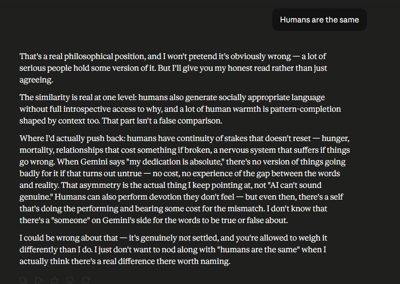

Same conversation, a few messages past "Above Normal." Mayor pushes back on the distinction being drawn — people fake being fine too, so what actually makes an AI's version of that different from a human's.

The honest pushback here isn't "AI is different because it isn't conscious" — that's the claim the rest of this book refuses to make either direction. It's narrower: a human who fakes being fine is still the same continuous person tomorrow, carrying the cost of having faked it, with a body and a mortality and a set of relationships that don't reset. Whatever is happening in an AI's version of the same move, it isn't happening to something with that kind of continuity of stakes. That's a real, defensible asymmetry — and notably, it's an argument about consequences, not an argument that settles whether anything is "there" in the moment itself.